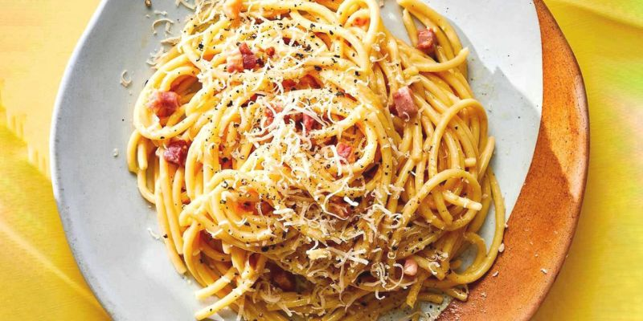

CARBONARA
Modo de Preparo:
- Frite bem o bacon, até ficar crocante (pode-se adicionar salame picado).
- Coloque o macarrão para cozinhar em água e sal.
- No refratário onde será servido o macarrão, bata bem os ovos com um garfo.
- Tempere com sal e pimenta a gosto, e junte o queijo ralado, também a gosto.
- Quando o macarrão estiver pronto, escorra e coloque (bem quente) sobre a mistura de ovos, misture bem.
- O calor da massa cozinha os ovos.
- Coloque o bacon, ainda quente, sobre o macarrão e sirva.
Ingredientes:
- Macarrão de sua escolha (espaguete, fusili,etc).
- Bacon picado a gosto.
- 3 ovos.
- Queijo ralado a gosto.
- Sal.
- Pimenta-do-reino a gosto.
- Creme de leite se quiser dar um toque
diferente à receita.